24 Graphs
Builders turn edge rows (or wide rows) into an ordinary plot map: they lay the graph out with the data functions of the Graphs and trees chapter and add the charts. Each builder lists its own options; the options it forwards to the layout functions and the builder options (title, scales, theme) are shared groups.
(ns reference.builders-graphs
(:require [clojure.string :as str]
[fastmath.random :as r]
[cljplot2.core :as plot]
[cljplot2.describe :as describe]
[notebook-utils :as nu]))(def friends [{:from "Ann" :to "Bob" :value 3} {:from "Ann" :to "Cid" :value 1} {:from "Bob" :to "Cid" :value 2}
{:from "Cid" :to "Dan" :value 4} {:from "Dan" :to "Eve" :value 1} {:from "Eve" :to "Ann" :value 2}
{:from "Dan" :to "Fay" :value 2} {:from "Fay" :to "Eve" :value 1}])| from | to | value |
|---|---|---|
| Ann | Bob | 3 |
| Ann | Cid | 1 |
| Bob | Cid | 2 |
| Cid | Dan | 4 |
| Dan | Eve | 1 |
| Eve | Ann | 2 |
| Dan | Fay | 2 |
| Fay | Eve | 1 |
(def people [{:id "Ann" :team "red" :age 31} {:id "Bob" :team "red" :age 45} {:id "Cid" :team "blue" :age 27}
{:id "Dan" :team "blue" :age 52} {:id "Eve" :team "green" :age 38} {:id "Fay" :team "green" :age 23}])| id | team | age |
|---|---|---|
| Ann | red | 31 |
| Bob | red | 45 |
| Cid | blue | 27 |
| Dan | blue | 52 |
| Eve | green | 38 |
| Fay | green | 23 |
Data: Migration flows between world regions, data-to-viz example dataset 13_AdjacencyDirectedWeighted (long form; Yan Holtz, after Abel & Sander 2014); licence: MIT (data_to_viz repository).
(def migration
"Flows between regions without the zeros and the diagonal; the file spells some names with dots."
(let [region #(str/replace % "." " ")]
(vec (for [{:keys [from to value]} (nu/dataset :migration)
:when (and (pos? (double value)) (not= (region from) (region to)))]
{:from (region from) :to (region to) :value value}))))| from | to | value |
|---|---|---|
| South Asia | East Asia | 0.525881 |
| South East Asia | East Asia | 0.145264 |
| Africa | Europe | 2.107883 |
| East Asia | Europe | 0.601265 |
| Latin America | Europe | 1.762587 |
| North America | Europe | 1.215929 |
| Oceania | Europe | 0.17037 |
| South Asia | Europe | 1.390272 |
| South East Asia | Europe | 0.468762 |
| Soviet Union | Europe | 0.60923 |
| West Asia | Europe | 0.449623 |
| North America | Latin America | 0.276908 |
| Africa | North America | 0.540887 |
| East Asia | North America | 0.97306 |
| Latin America | North America | 3.627847 |
| South Asia | North America | 1.508008 |
| South East Asia | North America | 1.057904 |
| West Asia | North America | 0.169274 |
| Africa | Oceania | 0.155988 |
| East Asia | Oceania | 0.333608 |
| South Asia | Oceania | 0.34742 |
| South East Asia | Oceania | 0.278746 |
| East Asia | South East Asia | 0.380388 |
| Africa | West Asia | 0.673004 |
| East Asia | West Asia | 0.869311 |
| South Asia | West Asia | 4.902081 |
Data: UK energy flows in 2050 (a DECC scenario), networkD3 JSONdata/energy.json (the d3 sankey example; UK Department of Energy & Climate Change 2050 Calculator); licence: networkD3 is GPL-3; the data’s licence isn’t stated.
(def energy (nu/dataset :energy))| from | to | value |
|---|---|---|
| Agricultural 'waste' | Bio-conversion | 124.729 |
| Bio-conversion | Liquid | 0.597 |
| Bio-conversion | Losses | 26.862 |
| Bio-conversion | Solid | 280.322 |
| Bio-conversion | Gas | 81.144 |
| Biofuel imports | Liquid | 35 |
| Biomass imports | Solid | 35 |
| Coal imports | Coal | 11.606 |
| Coal reserves | Coal | 63.965 |
| Coal | Solid | 75.571 |
| District heating | Industry | 10.639 |
| District heating | Heating and cooling - commercial | 22.505 |
| District heating | Heating and cooling - homes | 46.184 |
| Electricity grid | Over generation / exports | 104.453 |
| Electricity grid | Heating and cooling - homes | 113.726 |
| Electricity grid | H2 conversion | 27.14 |
| Electricity grid | Industry | 342.165 |
| Electricity grid | Road transport | 37.797 |
| Electricity grid | Agriculture | 4.412 |
| Electricity grid | Heating and cooling - commercial | 40.858 |
| Electricity grid | Losses | 56.691 |
| Electricity grid | Rail transport | 7.863 |
| Electricity grid | Lighting & appliances - commercial | 90.008 |
| Electricity grid | Lighting & appliances - homes | 93.494 |
| Gas imports | Ngas | 40.719 |
| Gas reserves | Ngas | 82.233 |
| Gas | Heating and cooling - commercial | 0.129 |
| Gas | Losses | 1.401 |
| Gas | Thermal generation | 151.891 |
| Gas | Agriculture | 2.096 |
| Gas | Industry | 48.58 |
| Geothermal | Electricity grid | 7.013 |
| H2 conversion | H2 | 20.897 |
| H2 conversion | Losses | 6.242 |
| H2 | Road transport | 20.897 |
| Hydro | Electricity grid | 6.995 |
| Liquid | Industry | 121.066 |
| Liquid | International shipping | 128.69 |
| Liquid | Road transport | 135.835 |
| Liquid | Domestic aviation | 14.458 |
| Liquid | International aviation | 206.267 |
| Liquid | Agriculture | 3.64 |
| Liquid | National navigation | 33.218 |
| Liquid | Rail transport | 4.413 |
| Marine algae | Bio-conversion | 4.375 |
| Ngas | Gas | 122.952 |
| Nuclear | Thermal generation | 839.978 |
| Oil imports | Oil | 504.287 |
| Oil reserves | Oil | 107.703 |
| Oil | Liquid | 611.99 |
| Other waste | Solid | 56.587 |
| Other waste | Bio-conversion | 77.81 |
| Pumped heat | Heating and cooling - homes | 193.026 |
| Pumped heat | Heating and cooling - commercial | 70.672 |
| Solar PV | Electricity grid | 59.901 |
| Solar Thermal | Heating and cooling - homes | 19.263 |
| Solar | Solar Thermal | 19.263 |
| Solar | Solar PV | 59.901 |
| Solid | Agriculture | 0.882 |
| Solid | Thermal generation | 400.12 |
| Solid | Industry | 46.477 |
| Thermal generation | Electricity grid | 525.531 |
| Thermal generation | Losses | 787.129 |
| Thermal generation | District heating | 79.329 |
| Tidal | Electricity grid | 9.452 |
| UK land based bioenergy | Bio-conversion | 182.01 |
| Wave | Electricity grid | 19.013 |
| Wind | Electricity grid | 289.366 |
Data: Titanic passengers and crew by class, sex, age and survival, R datasets package Titanic (Dawson 1995); licence: Part of R (GPL-2 | GPL-3).
(def titanic (nu/dataset :titanic))| class | sex | age | survived | n |
|---|---|---|---|---|
| 1st | Male | Child | No | 0 |
| 2nd | Male | Child | No | 0 |
| 3rd | Male | Child | No | 35 |
| Crew | Male | Child | No | 0 |
| 1st | Female | Child | No | 0 |
| 2nd | Female | Child | No | 0 |
| 3rd | Female | Child | No | 17 |
| Crew | Female | Child | No | 0 |
| 1st | Male | Adult | No | 118 |
| 2nd | Male | Adult | No | 154 |
| 3rd | Male | Adult | No | 387 |
| Crew | Male | Adult | No | 670 |
| 1st | Female | Adult | No | 4 |
| 2nd | Female | Adult | No | 13 |
| 3rd | Female | Adult | No | 89 |
| Crew | Female | Adult | No | 3 |
| 1st | Male | Child | Yes | 5 |
| 2nd | Male | Child | Yes | 11 |
| 3rd | Male | Child | Yes | 13 |
| Crew | Male | Child | Yes | 0 |
| 1st | Female | Child | Yes | 1 |
| 2nd | Female | Child | Yes | 13 |
| 3rd | Female | Child | Yes | 14 |
| Crew | Female | Child | Yes | 0 |
| 1st | Male | Adult | Yes | 57 |
| 2nd | Male | Adult | Yes | 14 |
| 3rd | Male | Adult | Yes | 75 |
| Crew | Male | Adult | Yes | 192 |
| 1st | Female | Adult | Yes | 140 |
| 2nd | Female | Adult | Yes | 80 |
| 3rd | Female | Adult | Yes | 76 |
| Crew | Female | Adult | Yes | 20 |
24.1 network
A node-link diagram of edge rows (:from, :to, optional :value): nodes placed by a force-directed, circle or random layout (seeded here), edges as segments - with arrows for a directed graph.
| Option | Type | Default | Description |
|---|---|---|---|
| :mapping | map of keyword to any value or nil | node aesthetics (:color, :size, :shape): accessors of the nodes (their row's columns, :degree, :in, :out) | |
| :edge-mapping | map of keyword to any value or nil | edge aesthetics (:color, :size - the width): accessors of the edges (their row's columns, :value); none mapped in :mapping too | |
| :node-style | map of keyword to any value or nil | theme [:chart :network-node] | scatter options of the nodes, merged over the default |
| :edge-style | map of keyword to any value or nil | theme [:chart :network-edge] | segment options of the edges, merged over the default (a mapped colour wins); :arrow - the arrows of a directed graph |
| :labels | true or false or a keyword, a function or a categorical marker of one or nil | false | node labels right of the nodes: true - the id, an accessor of the node, false - none |
Node aesthetics from the node rows or the computed degree (whole numbers: :integer-ticks through the builder’s :scales, the teams in colours matching their names), labels beside the nodes (a label overlapping that of a larger node is left out):
(plot/render-image (plot/network friends {:nodes people :rng (r/rng :mersenne 1)
:mapping {:color :team :size :degree}
:scales {:size {:integer-ticks true}
:color {:range {"red" [213 94 0] "blue" [0 114 178] "green" [0 158 115]}}}
:labels true})
{:width 600 :height 400})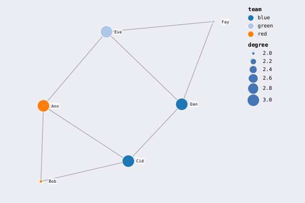
The node and edge style merged over the defaults, a directed graph’s arrows in :edge-style (left); edge widths from the weights and labels from a node column (:labels :age, right) - an aesthetic maps either nodes or edges, not both:
(plot/render-image (plot/arrange [(plot/network friends {:directed true :rng (r/rng :mersenne 1)
:node-style {:size 16 :color [230 120 40] :shape \S}
:edge-style {:color [60 60 60] :arrow {:size 9}}
:labels false
:title "styles, directed"})
(plot/network friends {:nodes people :layout :circle
:edge-mapping {:size :value}
:labels :age
:title ":labels :age, circle layout"})]
{:columns 2})
{:width 900 :height 380})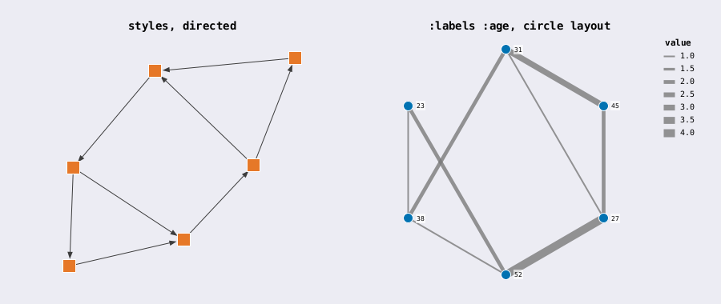
The theme styles a network draws with - the nodes in [:chart :network-node] (a scatter style over [:chart :scatter]), the edges in [:chart :network-edge] (a segment style), the labels in the text role :network-label (see the Theme chapter); :node-style / :edge-style win over them per call:
| Option | Type | Default | Description |
|---|---|---|---|
| :size | a non-negative number | 12 | The point size in pixels; a mapped `:size` wins. |
| :color | a clojure2d color or :none | [0 114 178] | The colour of the points (in a 3D cloud, of every mark); a mapped `:color` wins. |
| :stroke-color | a clojure2d color or :none | :white | The colour of each point's outline. |
| :stroke-width | a non-negative number | 1 | The width of the outline in pixels; `0` draws no outline. |
| :shape | a shape character or shape map | \O | The shape of every point; a mapped `:shape` wins. |
| :alpha | a number in [0 1] or nil | The colours' own alpha. | The opacity of every point (in a 3D cloud, of every mark) and its legend key; the outline keeps its own. |
A theme restyles every network of a plot - here square, dark nodes:
(plot/render-image (plot/network friends {:rng (r/rng :mersenne 1) :labels true
:theme {:chart {:network-node {:shape \S :color [60 60 60] :size 10}}}})
{:width 500 :height 360})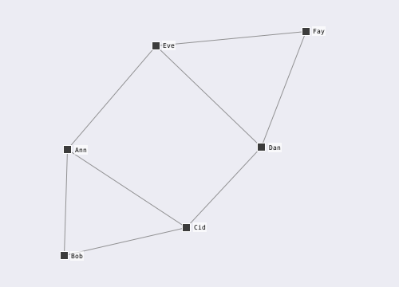
| Option | Type | Default | Description |
|---|---|---|---|
| :color | a clojure2d color or :none | [120 120 120 200] | line colour (a mapped :color wins) |
| :line-width | a non-negative number | 1 | line width in pixels |
| :dash | :none, a dash style (:dashed :dot-dash :dot-dot-dash :dotted :long-dash :loose-dot :solid :two-dash) or a sequence of positive numbers or nil | :none | dash style of the line (a mapped :dash wins) |
Dashed blue edges and larger labels through the theme:
(plot/render-image (plot/network friends {:rng (r/rng :mersenne 1) :labels true
:theme {:chart {:network-edge {:color [40 90 200] :dash :dashed :line-width 2}}
:text {:network-label {:size 11}}}})
{:width 500 :height 360})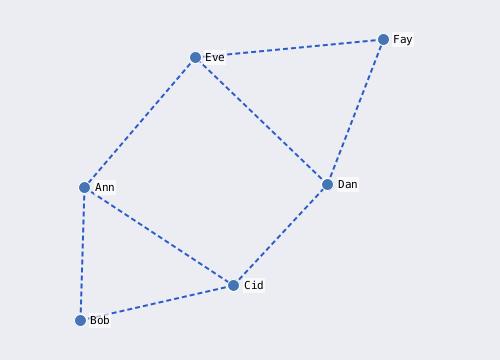
24.2 chord
Flows between groups around a circle: a sector per node sized by its flow, a ribbon per link - directed (a ribbon per flow) or not (a ribbon per pair).
| Option | Type | Default | Description |
|---|---|---|---|
| :alpha | a number in [0 1] | 0.6 | opacity of the ribbons |
| :labels | true or false | true | node names outward from the sectors' middles (nodes without flow unlabelled) |
Migration between world regions (flows under 0.1 dropped), opaque ribbons and no labels (right):
(plot/render-image (plot/arrange [(plot/chord migration {:directed true :min-value 0.1 :title "directed, :alpha 0.6"})
(plot/chord migration {:min-value 0.1 :alpha 1.0 :labels false
:title ":alpha 1.0, :labels false"})]
{:columns 2})
{:width 1000 :height 500})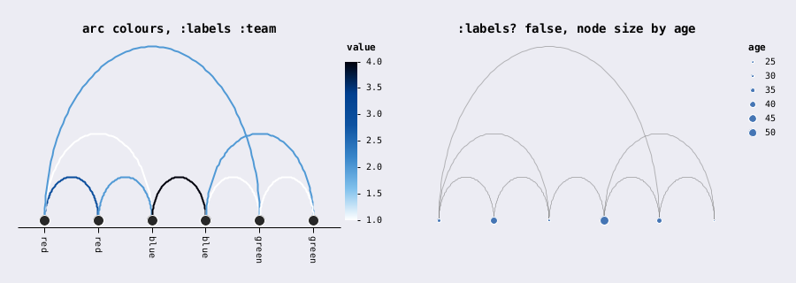
24.3 arc
Nodes on a line, links as arcs above it - a compact view of a graph whose node order matters.
| Option | Type | Default | Description |
|---|---|---|---|
| :mapping | map of keyword to any value or nil | node aesthetics (:color, :size, :shape): accessors of the nodes (their row's columns, :degree, :in, :out) | |
| :edge-mapping | map of keyword to any value or nil | {:size :value} (widths from the size scale {:range [0.5 4]}) when the edge weights differ and :mapping has no :size | edge aesthetics (:color, :size - the width): accessors of the edges (their row's columns, :value); none mapped in :mapping too |
| :alpha | a number in [0 1] | 0.5 | opacity of the arcs' strokes |
| :node-style | map of keyword to any value or nil | theme [:chart :arc-node] | scatter options of the nodes, merged over the default |
| :edge-style | map of keyword to any value or nil | theme [:chart :arc-edge] | line options of the arcs, merged over the default |
| :labels | true or false or a keyword, a function or a categorical marker of one | true | node labels under the line, rotated to read downward: true - the id, false - none, or an accessor of the node (a nil or "" result - an empty label) |
Node colours from their rows, arc widths from the weights (the default when weights differ), names under the line:
(plot/render-image (plot/arc friends {:nodes people :mapping {:color :team}
:scales {:color {:range {"red" [213 94 0] "blue" [0 114 178] "green" [0 158 115]}}}})
{:width 600 :height 320})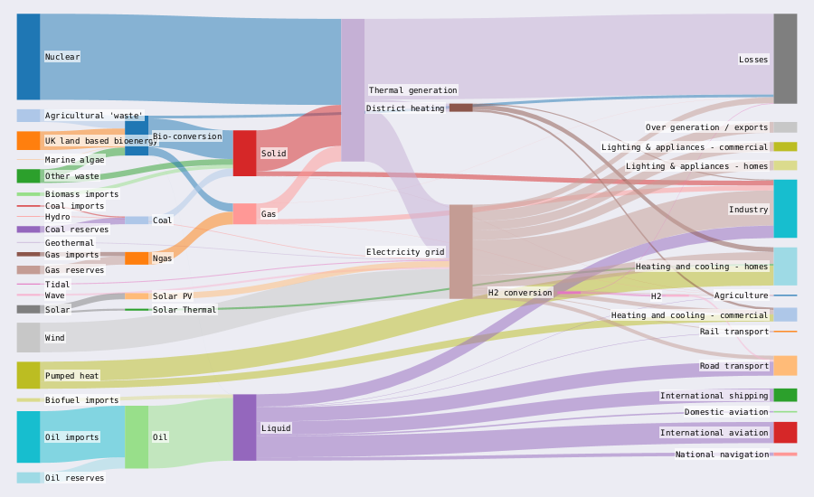
Arc colours and opacity, node style, labels from a node column (left); no labels (right):
(plot/render-image (plot/arrange [(plot/arc friends {:nodes people :edge-mapping {:color :value} :alpha 0.9
:node-style {:size 12 :color [40 40 40]}
:edge-style {:line-width 2}
:labels :team
:title "arc colours, :labels :team"})
(plot/arc friends {:nodes people :mapping {:size :age} :labels false
:title ":labels false, node size by age"})]
{:columns 2})
{:width 900 :height 320})
The theme styles of an arc diagram - nodes in [:chart :arc-node] (scatter), arcs in [:chart :arc-edge] (line; its colour, width and dash shown - the other line style keys apply too, see the line chart):
| Option | Type | Default | Description |
|---|---|---|---|
| :size | a non-negative number | 8 | The point size in pixels; a mapped `:size` wins. |
| :color | a clojure2d color or :none | [0 114 178] | The colour of the points (in a 3D cloud, of every mark); a mapped `:color` wins. |
| :stroke-color | a clojure2d color or :none | :white | The colour of each point's outline. |
| :stroke-width | a non-negative number | 1 | The width of the outline in pixels; `0` draws no outline. |
| :shape | a shape character or shape map | \O | The shape of every point; a mapped `:shape` wins. |
| :alpha | a number in [0 1] or nil | The colours' own alpha. | The opacity of every point (in a 3D cloud, of every mark) and its legend key; the outline keeps its own. |
Hollow nodes through the theme:
(plot/render-image (plot/arc friends {:theme {:chart {:arc-node {:shape \o :color [200 60 40] :size 10}}}})
{:width 500 :height 300})
| Option | Type | Default | Description |
|---|---|---|---|
| :color | a clojure2d color or :none | [120 120 120] | line colour (a mapped :color wins) |
| :line-width | a non-negative number | 1 | line width in pixels |
| :dash | :none, a dash style (:dashed :dot-dash :dot-dot-dash :dotted :long-dash :loose-dot :solid :two-dash) or a sequence of positive numbers or nil | :none | dash style of the line (a mapped :dash wins) |
Thick dark arcs through the theme:
(plot/render-image (plot/arc friends {:edge-mapping {} :alpha 0.8
:theme {:chart {:arc-edge {:color [40 40 40] :line-width 3}}}})
{:width 500 :height 300})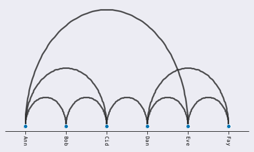
24.4 sankey
Flows through layered nodes: nodes as bars in columns, links as bands as wide as their flow.
| Option | Type | Default | Description |
|---|---|---|---|
| :mapping | map | node aesthetics: only :color | |
| :mapping :color | a keyword, a function or a categorical marker of one or nil | the node id, no legend | accessor of the node rows giving the node colour (a legend unless it's the id) |
| :link-color | one of :source :target :theme or nil | :source | the flow colour: that of its :source or :target node, or :theme (the theme style [:chart :sankey-link], grey) |
| :alpha | a number in [0 1] | 0.5 | opacity of the flow bands |
| :labels | true or false | true | node names beside the nodes, inside the frame |
The UK energy flows of a 2050 scenario, bands in their source’s colour (the default). A node name too long for its room - up to the nearest node on its side in its line, half way when that node’s name faces it across the gap - shrinks, down to the :min-size of the text role :sankey-label (here the farm wastes before Bio-conversion); a name overlapping that of a larger node is left out:
(plot/render-image (plot/sankey energy {:link-color :source})
{:width 900 :height 550})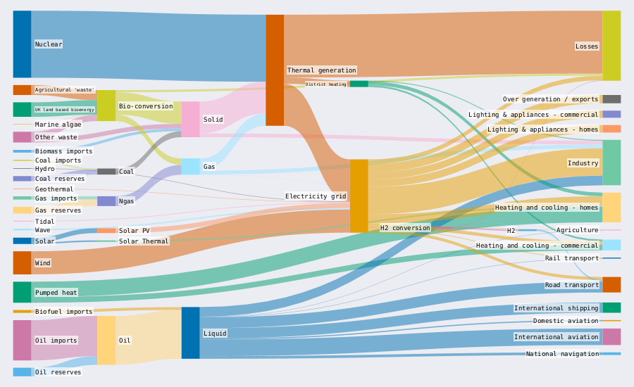
Bands in the target’s colour with stronger opacity (:alpha 0.8), bands in the theme’s grey, and nodes coloured by a node column with a legend and no labels:
(def stages [{:id "web" :kind "channel"} {:id "store" :kind "channel"} {:id "basket" :kind "step"}
{:id "paid" :kind "outcome"} {:id "left" :kind "outcome"}])| id | kind |
|---|---|
| web | channel |
| store | channel |
| basket | step |
| paid | outcome |
| left | outcome |
(def visits [{:from "web" :to "basket" :value 60} {:from "store" :to "basket" :value 30}
{:from "basket" :to "paid" :value 55} {:from "basket" :to "left" :value 35}])| from | to | value |
|---|---|---|
| web | basket | 60 |
| store | basket | 30 |
| basket | paid | 55 |
| basket | left | 35 |
(plot/render-image (plot/arrange [(plot/sankey visits {:link-color :target :alpha 0.8 :title ":link-color :target"})
(plot/sankey visits {:link-color :theme :title ":link-color :theme"})
(plot/sankey visits {:nodes stages :mapping {:color :kind} :labels false
:title ":mapping {:color :kind}, no labels"})]
{:columns 3 :widths [1 1 1.3]})
{:width 1000 :height 330})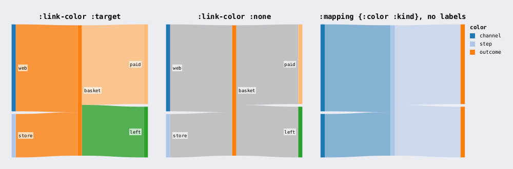
The flow bands draw in the theme style [:chart :sankey-link] (a polygon style; its colour shows with :link-color :theme), the node names in the text role :sankey-label:
| Option | Type | Default | Description |
|---|---|---|---|
| :color | a clojure2d color or :none | [150 150 150] | The fill colour; a mapped `:color` wins. |
| :alpha | a number in [0 1] | 1.0 | How opaque the fill is; it multiplies the fill colour's alpha. |
| :stroke-color | :color or a clojure2d color or :none | :none | The colour of the outline. |
| :stroke-width | a non-negative number | 1 | The width of the outline in pixels; `0` draws no outline. |
Grey bands outlined in white, larger names:
(plot/render-image (plot/sankey visits {:link-color :theme
:theme {:chart {:sankey-link {:color [120 140 170] :stroke-color :white
:stroke-width 1}}
:text {:sankey-label {:size 11}}}})
{:width 600 :height 330})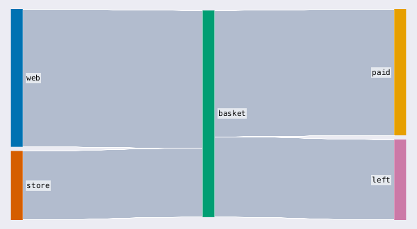
24.5 alluvial
A column per categorical variable of wide rows, a stratum per level and strands between neighbouring columns, weighted by a value and coloured by one variable all the way through.
| Option | Type | Default | Description |
|---|---|---|---|
| :alpha | a number in [0 1] | 0.6 | opacity of the strands |
| :node-width | a number in (0 1) | 0.12 | stratum width, a fraction of the plot width |
| :gap | a non-negative finite number | 0.03 | least gap between the strata of an axis, a fraction of the plot height |
| :variable-names | sequential of any value or nil | the variables' accessor names (a keyword's name, else its text) | names under the columns, one per variable |
Titanic passengers by class, sex, age and survival, coloured by class:
(plot/render-image (plot/alluvial titanic {:variables [:class :sex :age :survived] :value :n :strand-color :class})
{:width 900 :height 500})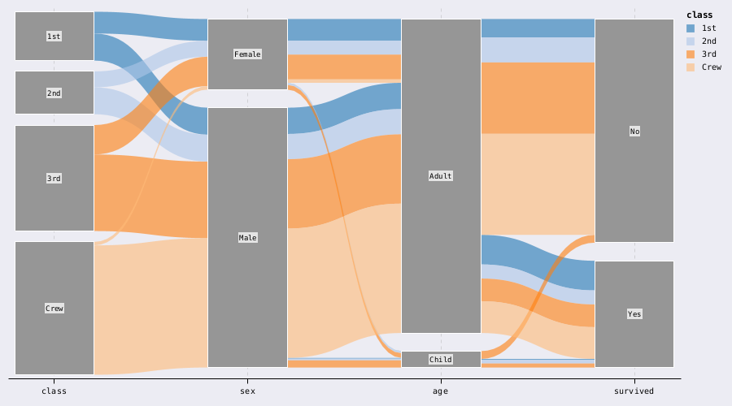
Opaque strands, wide strata with large gaps and names of your own under the columns:
(plot/render-image (plot/alluvial titanic {:variables [:class :survived] :value :n :strand-color :survived
:alpha 0.9 :node-width 0.25 :gap 0.1
:variable-names ["passenger class" "survived?"]})
{:width 600 :height 400})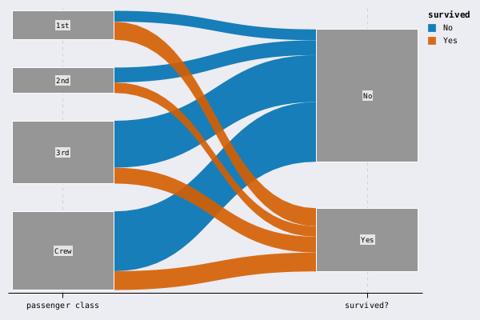
The strata draw in the theme style [:chart :alluvial-stratum] (a polygon style), their names in the text role :alluvial-label:
| Option | Type | Default | Description |
|---|---|---|---|
| :color | a clojure2d color or :none | [150 150 150] | The fill colour; a mapped `:color` wins. |
| :alpha | a number in [0 1] | 1.0 | How opaque the fill is; it multiplies the fill colour's alpha. |
| :stroke-color | :color or a clojure2d color or :none | :white | The colour of the outline. |
| :stroke-width | a non-negative number | 1 | The width of the outline in pixels; `0` draws no outline. |
Dark strata with light names:
(plot/render-image (plot/alluvial titanic {:variables [:class :survived] :value :n :strand-color :survived
:theme {:chart {:alluvial-stratum {:color [50 50 50]}}
:text {:alluvial-label {:color :white :background :none}}}})
{:width 600 :height 400})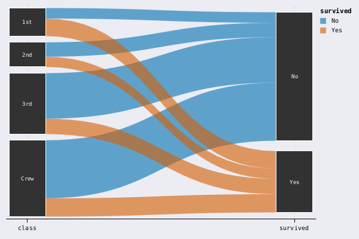
source: notebooks/reference/builders_graphs.clj